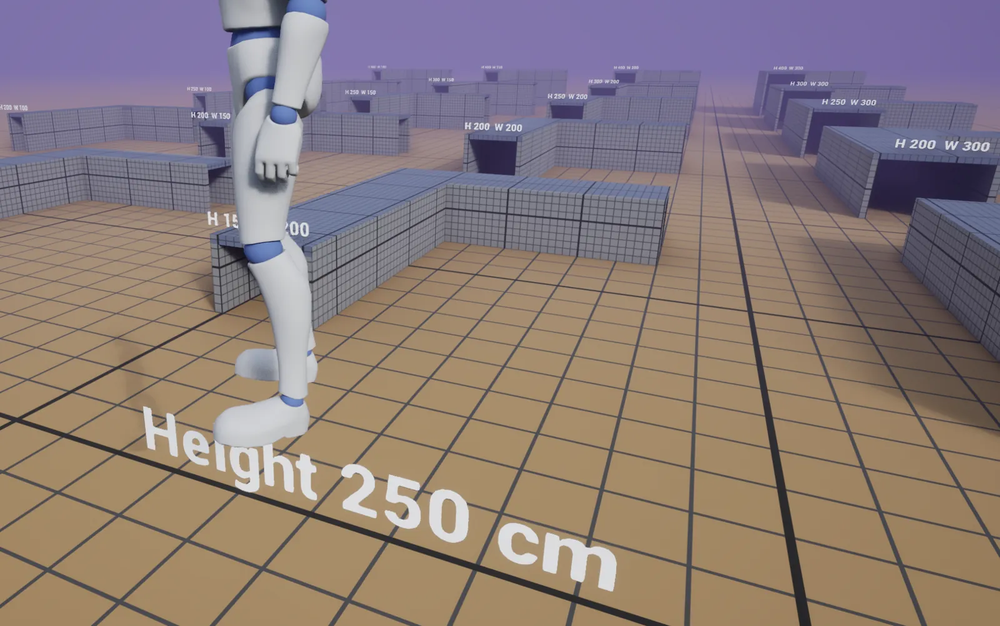
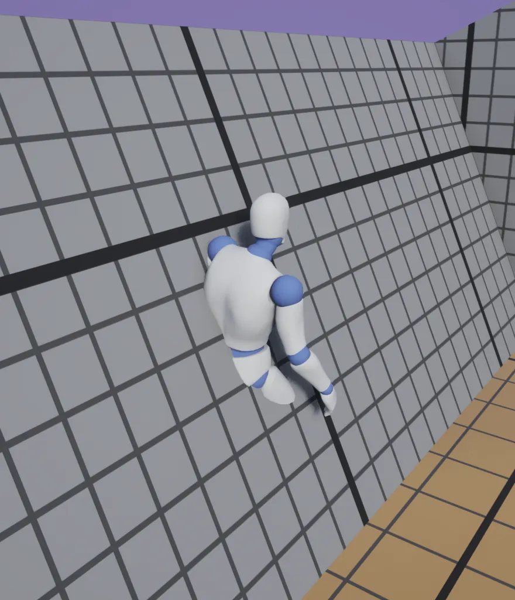
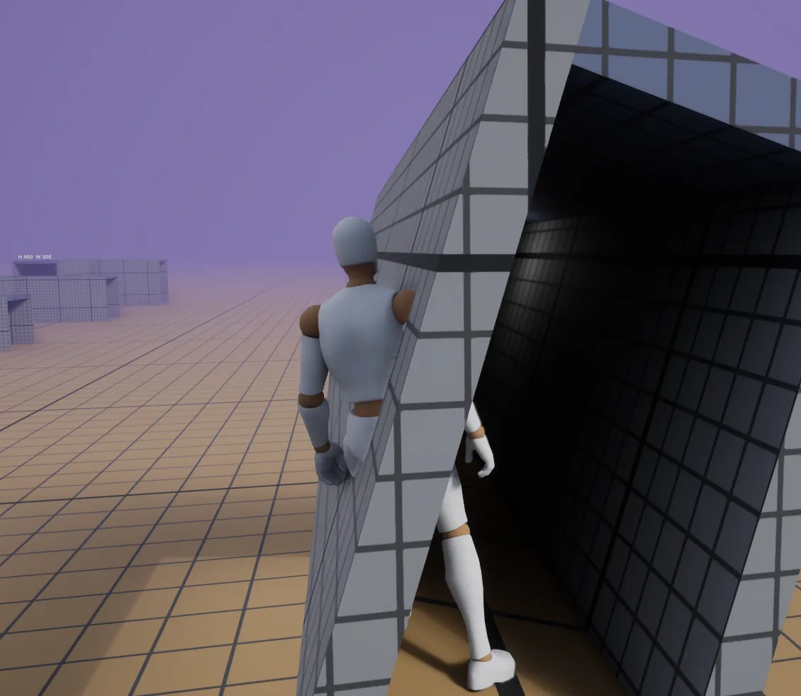
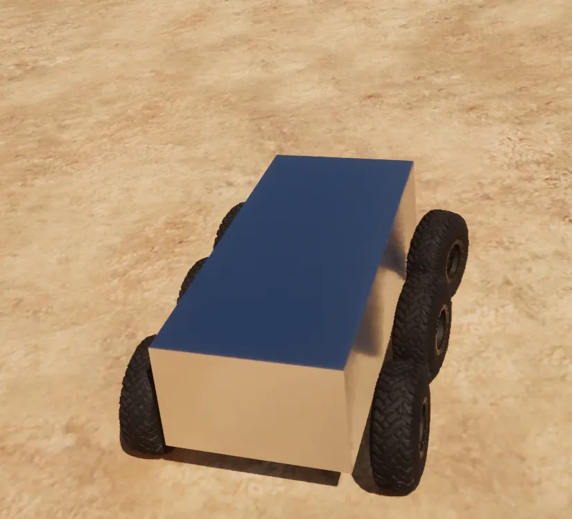

A greybox material that works as a ruler, climbing on any mesh, size tests for corridors and characters, and the first vehicles with tank steering.
What we made
- A greybox material that works as a ruler. Grid lines every metre, measured in the world, so you can read jump heights and door widths off any wall. Colours mean things. Later in the week it got a switch, so the grid sticks to things that move.
- Greybox meshes you can walk on. New meshes made in Unreal had no collision; now they do by default.
- Climb anywhere. Every mesh can be climbed or vaulted, unless it is tagged
NoTraverse. Before, you had to hide special blocks inside every mesh. - AI tools connected to the Unreal editor, so Claude can build and test with us, on the school computer and at home.
- One set of documents in the project, for people and AI tools together.
- Size tests. Corridors from 100 to 300 cm wide and 150 to 400 cm high, and height pads. A 150 cm high corridor means crouching.
- Corridors that roll like a ship, up to 25°. 100 cm wide traps you at the steepest angles; 150 cm never got stuck and feels good. The tank's corridors start at 150 cm.
- Characters of other sizes (100 and 250 cm). Climbing works after three fixes; the hands don't quite meet the edge. Parked for now.
- The classic camera is the default. It stays calm in tight, moving spaces; the new camera jumped around.
- The first vehicles. Unreal's Chaos vehicles drive once physics prediction is switched on. Six to eight wheels are stable; twelve wheels creep and turn by themselves.
- Tank steering that turns on the spot. "Looks and feels amazing."
- A Blender template that exports models to Unreal at the right size, with guides for a 172 cm character and a 150 cm corridor.
- Research on tank tracks, and a plan: real links up close, a moving belt far away.
Decisions
- The greybox grid is measured in the world, in centimetres.
- Every mesh is climbable by default.
- Tests and temporary work stay in your own developer folder; tests worth repeating get a shared test level.
- Diversion for version control, not GitHub.
- The prototype uses one character size.
- The classic camera is the default.
- Tanks drive on 6 to 8 wheels; the tracks are only for show.
All of them with reasons: Decisions.
New ideas
Tank tracks · Movement mods you equip · Characters of other sizes · A tank you build yourself
Pictures








